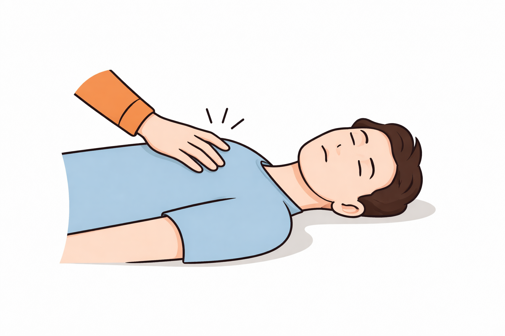
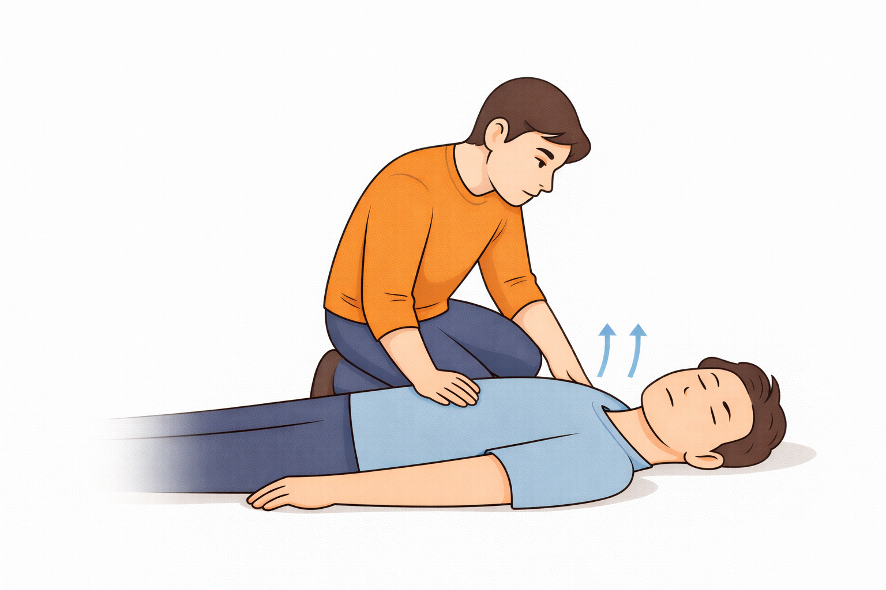

Checking Responsiveness
Why This Step Matters
Before starting CPR, you must determine if the person is conscious and breathing normally.
Steps
Ensure you are in a safe location before proceeding.
Step 1: Tap the person's shoulders firmly.
Step 2: Shout loudly: "Are you okay?"
Step 3: Look for breathing or movement.
Step 4: If there is no response, call emergency services immediately.
Safety Tip
If the person is unresponsive and not breathing normally, begin CPR immediately after calling emergency services. Do not delay starting CPR, as it can significantly increase the person's chances of survival.
Ideally checking for responsiveness and breathing should only take seconds. Immediately after confirming unresponsiveness and absence of normal breathing, call emergency services and begin CPR.
Step 1: Tap the person's shoulders firmly.
Gently tap the person's shoulders to check for responsiveness. Make sure the area is safe before approaching.

Step 2: Shout loudly: "Are you okay?"
Speak loudly near the person's ear to see if they respond. Look for eye movement, speech, or any physical reaction.

Step 3: Look for breathing or movement.
Watch the chest for normal breathing and look for any movement. If the person is not breathing normally or is unresponsive, prepare to call emergency services.

Step 4: If there is no response, Begin compressions and call emergency services immediately.
Call 911 or your local emergency number right away. If others are nearby, ask someone to call emergency services and locate an AED while you perform CPR.